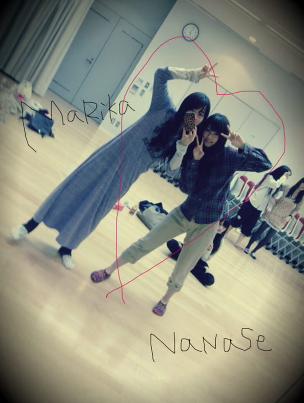
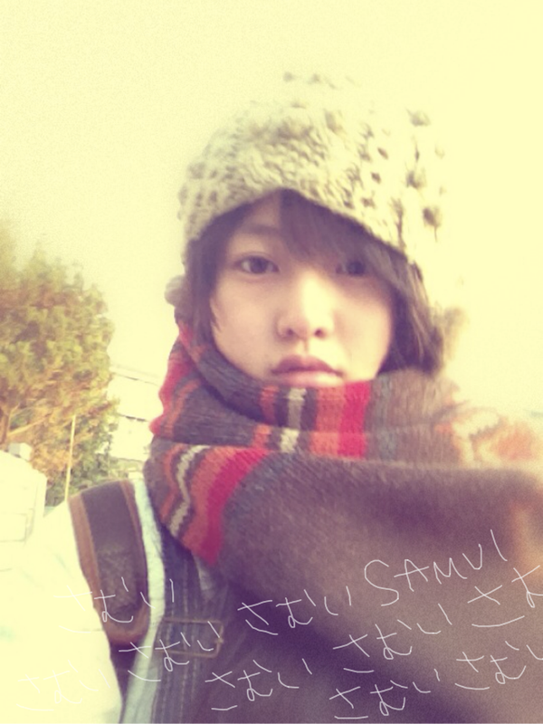
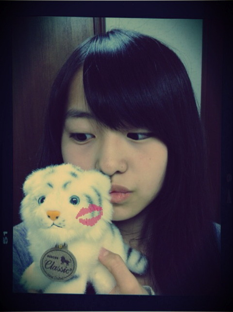
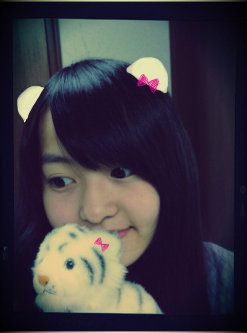
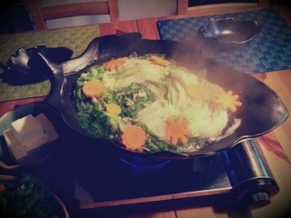
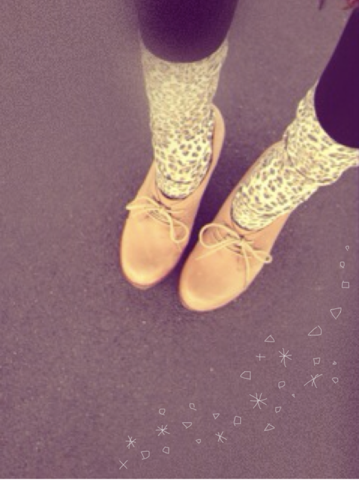
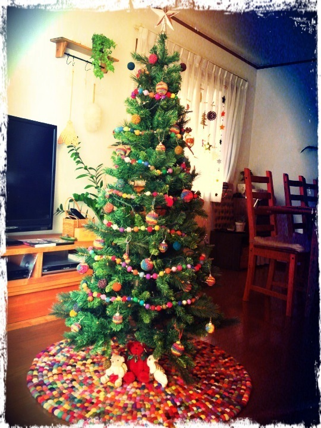
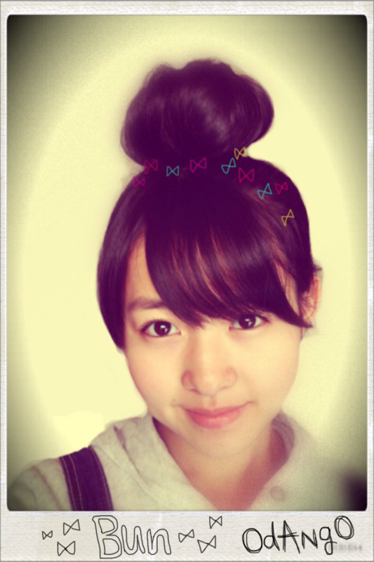
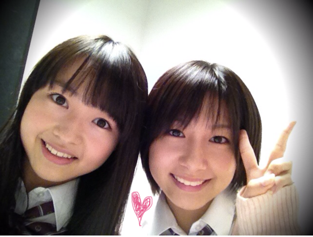
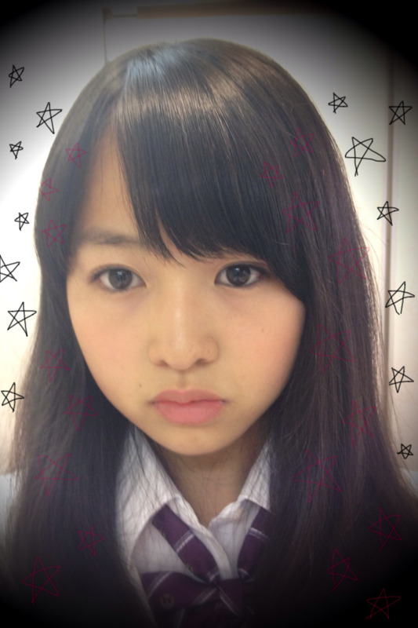

2011/1220Tue31回目*marika
ベビたんですよ。
いつも読んでくださってる方、
初めて読んでくださった方、
コメントしてきださった方、
ありがとうございます。
いつの間に沢山のコメントが...っ!!
うれし----><
うぅ----れしい-----です＊°+
質問じゃんじゃん
お答えしまっせ:Dきらきら
...............................
・サンタさんにプレゼントお願い何にする？
リアルな動物のぬいぐるみ♡
パパにちゃんといいました。←
・今スマーフ何レベルなの？
どやってされた!!
ちなみに私はレベル９ですどやあああああ!!!
スヌーピーストリートも
やり始めましたどやあああああ!!!
・年下に応援されるのはいやですか？
ええ!!いやだなんて....
うれしいですよ♡
ありがとうございますっ=33
・お母さんなにもの？
デザイナーさんかなんかやってたんですか？
元ファッションデザイナーです。
服や家具のこだわりがはんぱないですよ!!
・炭酸飲料限定にしたらなにが好き？
ジンジャーエール♡♡
・何色のサイリウム振ればいいの？
質問としてとらえました。笑
では、私のイメージカラーが
あればそれがいいかな^^
・ツリーの待受にします。してもいいかな？
ぜひぜひっ!!
私も待ち受けにしてます。
クリスマスまでやりますよ:D☆
・気になる洋服のブランドあったら教えて！
最近気になるのは
jouetie
かな^^*?
好きなのは
BEAMS BOY
Par Avion
RNA~N~
KAPITAL
JOURNAL STANDARD
です♡
どれも自分じゃ買えないけどね*
・駅の発車メロディーが
好きっていうものがある？
意識してちゃんと聴いてなかった° °!!
いろんなメロディーがあるんですね♪
・なにかぜひ見て欲しい
オススメの映画とかDVDってある？
う〜んそうだな..
前にもかいた
ジュラシックパーク
バックトゥザフューチャーの他に
サンダーバードの実写映画とか
ギャラクシークエストっていう映画も
おもしろいです。
サンダーバードがかっこいいんだこれが!!
実写じゃない人形のもおしゃれなので
興味があったら観てください^^*
・まりかちゃんの乃木坂の中で推しめんは誰？
かわいこちゃんがいっぱいで
迷っちゃいますよ**!!
みんなに毎日きゅんきゅんだからね♡
・長いコメは読みづらいですか？
そんなことないです!!
長いコメントもとってもうれしいです＊
しっかり読んでます☆*
・元気が出ないときとか落ち込んだ時は
どうやって元気になりますか？
みなさんからのコメント読みます＊
うれしいから何回も読みます♡
親友に電話したりして
沢山笑ってたら自然と元気になります*。
・将来的にどのような芸能活動をしたい？
いろんな活動ができたらいいな。
やっぱりファッション雑誌に出たいです!!
・ファンの方に何言われると高まる？
何...、何って何でも!!
応援してくださるなら＊!!
私は握手できるだけで
高山になります。↑↑
・いちご豆乳はオリジナル？
元からレシピあったの？
ジューススタンドで飲んだ時
作れるかな？って思って
おいしくなりそうなもの
放り込んで混ぜてみました笑
ミキサーがあれば簡単になんでも
ジュースにできます:)☆
・朝ごはんは ご飯かパンどっちですか？
今の気分だったら....
パンかな。←
どっちも派です^^にひ
・ベリーダンスとかできますか？
でっできませーーーん!!!
・バレエのほかには
どんなダンス習ってましたか？
ジャズダンスをほんのちょとだけ...
ダンスはすきです。
・乃木坂のダンスレッスンは厳しいですか？
難しいダンスもあるけど
すきだから楽しいです♪
...............................
はい。今日はここまで!
しゃしん＊

ななせのにぼしがおいしくて
それずっと食べてた笑
私もいつもにぼしと
ナッツとドライフルーツ
持ち歩いてます*
ななせと仲良しこよし♡
あっ
お兄ちゃんに
オススメのロックバンド
入れてもらったよ-へっへ
電車ん中で聴こうっと^^
♪♫~♩~♪
オススメの本。
沢山ありがとうございます♪
読んでみようかな＊
山田悠介さんの本では
『スイッチを押すとき』
『ライブ』
『DUST法』
すきです。
でもどれもおもしろい‼
さむいのよ-----------ん

こうやってみなさん。
あったかくしてください。
私は冬になるとマフラーで
首をぐるぐる巻きにします。
コメント沢山ありがとうございました。
何回も読み返しました*
にこにこ
ほわほわ
めっちゃ頑張らなっ=33って思います。
明日も一緒に頑張ろう。
昨日パワーを出したけど....
笑ってくれてありがとうございました。
しっかり元気になってね*
もうすぐクリスマスですよ☆☆
イベント頑張ろ^^

MerrY ChRistMAs
ベビたん*****bA by marika
2011/1218Sun30回目*marika
30回目***
やった-----!!!
こんばんわ。ベビたんです。
昨日は更新しなくてすみません;(
いつも読んでくださってる方、
初めて読んでくださった方、
コメントしてくださった方
ありがとうございます!!
昨日はみんなでお仕事でした--♪
お疲れさまです。
にぎやかでいいねぇ＊
仕事の合間に
なぁちゃん、せいらと
寝てたんやけど
私だけ寝てる姿がおかしかったらしい...
しゃしん撮られてもうた がーん
笑
なぁちゃんとちはるが
変なダンス踊ってた笑
3人ではしゃいでた!!
ゆきなともわいわいしとった!!
笑ったなぁ〜。
昨日のお仕事はめちゃ楽しかった♡
写真撮られるのすきだなぁ☆
とにかく楽しかった楽しかった♪るんるん
今日はLessonもお仕事もなくて
久しぶりの休みでした:D！
いつもより長い時間睡眠とったから
疲れもとれたぜっ!!
そんで録画してた
お笑い見てました***
今日はキムチ鍋やった♡
鍋どんだけ~~笑
でもおいしいからね~。むふ
今BloGかきながら
みかん食べてるよ。
みかん5個目♡

chu

お気に入りの子♡
癒しなの:)
20日から
『乃木坂46クリスマス スペシャルウィーク』
in 銀座ソニービル
始まります☆*
どきどき
うきうき
わくわく
みなさん!!
乃木坂46と過ごすクリスマス。
一緒に楽しみましょう♪
みなさんと一緒に過ごすことができるの
ほんとうにうれしいです!!
うきうきHaPpyです＊るんるん
風邪ひいてる方にパワーを....
治れー!!
う~~~~~~~はあっ!!!!!←
さむいけど、がんばろう!!
しっかりあったかい格好してください。
早く会いたいな~:D!!
今日もお疲れさまりか☆

MerrY ChRistMAs...
ベビたん*****bA by marika
2011/1217Sat29回目*marika
ベビたんよ:D
いつもありがとうございます。
みなさんのあったかいメッセージで
今日もほかほかしてます。
さ-む--いー!!
手がっ....手がぁぁ〜←
かっかじかんでっ
指先の感覚がないよ------ああー
みなさんも同じように
今手冷たいよね><
手袋をしても
どうしても寒いんですよね;
...........................
・オススメの曲教えて！
ゆるいロックバンドがすきです*＊。
GalileoGalileiさん
flumpoolさん
がすきです。
ジャズピアニストの
上原ひろみさん
めっちゃかっこいいので
聴いてみてください♡
・カラコンしてる？
してないです×!!
授業のときとかはメガネなんですけど
鼻にあとがつくから、
ほんとはコンタクトしたい......けど
こわくってできん泣←
・あしゅりんになぜバブちゃんって
名付けられたの？甘えたから？
なんでかな笑
あ!甘えてないですよ!!
お互いからかい合ってたのさぁ:-)ふふ
・いじられキャラなの？
....そうみたい。ぐすん←
・イメージカラーはある？
うーんなんだろなぁ??
何色だと思う^^?
・何色が好き？
この前は全色すきって言ってしまったけど
絞りますっ!!♪
赤,ピンク,紫,ターコイズブルー,カーキ,白,黒,茶
......です。
これでも多いですね 笑
・読書とかする？どんな本が好き？
山田悠介さんの本好きです＊
現実にない話に引き込まれて
一日で読んじゃいます!!
本だったらちょっと怖いのも読みます。
あと、泣けるものも好き＊
何かオススメの小説ありますかっ^^?
・母がもうすぐ誕生日で
何をあげたらいいやら...
何か思い付いたら教えて！
優しいですね**!!
手作り感のあるお手紙。
かわいいスリッパとか...
あったかいブランケットとか
どうでしょう??
私はかわいいワニの置物^^*
何気なくこれかわいい!と
言ってたのを覚えてたので
プレゼントしました!!
趣味が合うからね＊
・キャッチフレーズとかあるの？
『乃木坂46のベビーフェイス
ベビたんこと伊藤万理華』
.......です////←
・今ハマってる飲み物とかある？
あら!!この質問待ってましたっ笑
今いちご豆乳にめっちゃハマってるんですよ*
いちご,豆乳,はちみつ,
ちょとバナナ,ちょとヨーグルトを
ミキサーでぎゅいぃ-----んて混ぜるんです!!
朝に飲んでます♡
ココアも好きです!抹茶オレも!!
・れなと、しゃしんについて
「りんちゃん」ってからかってるだけ^^笑
今日もれなとわいわいしてたぁ☆
あのね!
どこ見てるか分からない自撮りはね!
髪にもらくがきしたけど、
色は赤じゃないよ!
ピンクだよ!!(どっちでもいい笑)
・ツリーのしゃしん
たぶん160cmくらいあるかな？
あっ!違うんだよ!!
あのしゃしんはね?
ちゃんとTVの横に置いてるけど、
みなさんに見せるために
きれいに写るように移動したんですっ!!
ちゃんときれいに見せれるように!!
ですX(
(必死!!笑)
・冬のセールとか行く予定？
あー!!行きたい♡
いいのあるかな~...
ほしい服いっぱいあるんです=33
今日はここまでっ
...........................
質問をしたのに忘れてるっ!!
というのがあれば言ってください!!
みなさんの質問には
できる限り返したいです***
いつもうれしいからね。えへ
髪型ほめてくださって
ありがとうございます♪るんるん
森ガールな感じ好きですか?
お団子して載せれたら載せます:)
あ!バレエのしゃしんも
載せれたら載せます☆
みなさんに合えるのももうすぐですね---＊
あー楽しみ♪るんるん
みなさんが会いたい、しゃべりたい
って言ってくださって
本当にうれしいです。
予定が合わなかった方、
わざわざ報告してくださって
ありがとうございます＊
残念××!!
会えるときは言ってくださいっ。
いつでも待ってます^^*
会いに来てくださる方!!
私うれしすぎて、
顔がにやにやしちゃうかも...！
冷え性なので、
みなさんの手を冷やしてしまったら
ごめんなさい。
私と握手をした時にみなさんの心が
ぽかぽかになりますように...!!
たくさんお話しできたらいいな。
風邪ひいてしまった方!!
体調はどうですか?
心配です;(!!
風邪をひいているのに
コメントしてくださって...
本当にやさしいです。
しっかりからだあっためてください!
私も風邪ひかないようにしなきゃっ。
みなさんも気をつけてください。
今日ミルフィーユ鍋だった♡
う〜んおいしい＊

画像どうやって大きさ変えるか
わかりました!!
鍋ちっちゃくしてごめんなさい
しゃしんはいつも大きい方がいいですか？

かわいい足下+。*＊.°。＊**
今日もお疲れさまりか＊
cHu
LOVE
ベビたん*****bA by marika
2011/1216Fri28回目*marika
Hiiiii!!!!!
はいぃぃ!!!!!
こんばんわまりかです:D
いつも読んでくださってる方、
初めて読んでくださった方、
コメントしてくださった方、
ありがとうございます*
............................
・大阪の友達に乃木坂報告したとき、
どんな反応だった？
すごく喜んでくれました!
えっ?えっ??えっ??!って。
私も報告した時は興奮状態で
どういうふうに報告したか
全く覚えてません><
・オススメのイルミネーション
スポットとかある？
イルミネーションを実際見たことないけど
『よみうりランド』!!
TVで見てめちゃきれいだったから
オススメ=3
私も行きたい*＊。
・インドア派？アウトドア派？
インドア派!
家でごろごろがだいすきだからね^^
ふっふふ
あぁー、ショッピングもよくするから~...
うん!ショッピング派♪
どっちやねんって笑
・オススメのiphone？スマホ？のアプリ教えて！
そうですね~...
私カメラ加工のアプリめっちゃ集めてて!!
そんな使わないのもあるのに笑
あと、
『おさわり探偵 なめこ栽培キット』
最近みさみさに教えてもらった
『スマーフ・ビレッジ』
育てる系が多いですね←
・中３と中1の娘を持つ父親ですが、
ベビたんのファンだとしたらひいちゃう？
どうしてですか!!
めっっっちゃくちゃうれしいですよ><
それに娘さんと年齢が近いと
なんだか親近感が:D.......☆
家族みんなで来てくださるのも
うれしいです♪
ありがたいです***
............................
ばぶちゃんって本当に呼ぶんですか!?
みなさんに呼ばないでっていったのに....
だめですよ!!
高校生だしっ。ねっ？
最近よくいじりますね...笑
とうとういじられキャラになってしまったぁぁ

まりかん家のツリーchanです♡♡
かっわいい!!っっかわいい-----!!
絨毯もかわいい♡
この季節、家族4人でご飯食べる時は
このツリーを眺めながらなんです^^*
毛糸のオーナメントは
元はシルバーのものなんです。
ママが編んだんだよ---
すごすぎる*。＊°.,
サンタさんに何おねだりしようかな^^
このツリーの下にプレゼント置いてくれるかなぁ??
名前ほめてくださって
ありがとうございました☆*
マリカーね。おもしろいよね!!
全然いやじゃないですよ-!!*
はい:)
久しぶりに.......
じゃん!!

リクエストの多かったお団子ヘアー
前髪ない時代も
よくお団子やってました!!
森ガールなコーデの時にすることが
多いかな。
イベント楽しみだな♪
みなさんに会いたい＊＊＊
コメントを読むたび思います...!
忙しい方、無理しないでくださいね。
寒いのでお鍋食べよう><
あ〜お鍋食べたい。
今日もお疲れさまりか**
LOVE
ベビたん*****bA by marika
2011/1215Thu27回目*marika
更新2‼
今日も楽しかった~~♪♪
いつも読んでくださってる方、
初めて読んでくださった方、
コメントしてくださった方、
ありがとうございます...!
さゆにゃん、とまたん
あらめまして、おめでとうっ♡
今日もかわいかったよ*←
今日はさゆにゃんとお話してね^^
めっちゃ高山ってたの笑
さゆにゃんもっと話そ-----♡!!
だいぶ前に撮ったしゃしんん----

「れな....」
「まりか....」
「れな!!」
「まりか!!」
「れな♡」
「まりか♡」
笑
逆バージョン有り。
れなとも仲良しなの----:D
会話する時の最初が
お互い名前を呼び合ってからなの笑
ときどき
れなって呼んだら
「りん付けなさい!りん!!」
って!!!!
だからときどき
「りんちゃーん♡」
って呼んであげるの笑
実は仲良いんだ----。んふふ
今日バレエの発表会のDVDが届いたから
Lesson終わってから
家で見ちゃった!!
また踊りたいなって思った><
しゃしんも届いたのさっ=33
やっぱりバレエは楽しいし、だいすきや♡
...........................
＊質問お答えします^^
・名前の由来は？
万 沢山花開く＊
理 賢く＊
華 華やかで美しく＊
まりかという響き、
漢字も素敵で、気に入ってます。
名付けてくれたおじいちゃん、ママ
ありがとうございました。
この名前にふさわしい女の子になりたいです。
・マフラーのこと
ああ!!間違えました!!!
すみません><
真洋との2ショの時のマフラーだと
勘違いしてました; ;
下のしゃしんのチェックのストールは
これもママさんからのおさがりで
45Rpmっていうブランドのやーつです!!
本当にごめんなさい;(
・ヲタ芸って知ってますか？
知ってますよ♪
迫力があっていいです!!
うれしいです^^*
・豚と白菜のミルフィーユ鍋って何？
あれですよ!あれ.....←
豚肉と白菜をサンドして
切ってきれいに鍋に入れてあるやつです!!
おいしいですよ--＊＊
お疲れさまりか
いいですね!にやっ
使おうかな^^*笑
・25回目の私服のしゃしん
誰にパンチしてるの？
しーてーなーいー!!笑
これね、真洋が撮ってくれたの*
のび〜してたらブレた♡笑
・好きで毎週絶対見てる番組とかある？
乃木坂って、どこ？
リンカーン
ガキの使いやあらへんで！
めちゃイケ
主にお笑い♡です。
・ねねに誕プレ何あげたの？
ほんとにねねに申し訳ない; ;泣
そんなたいしたものじゃないんですよ-
でも、0時にメールしたっ^^*
でもねねはそん時寝てたぁぁぁがーん
...........................
今日あすかに
「なんだよーばぶちゃんって
呼ぶぞーちゃははっ」
って言われたよ笑***
なんですってー!?
ばぶちゃんですってー!?←
みなさん、いじるのはいいけど
ばぶちゃんって呼ばんといて!笑
みなさん!コメント!!
いつもいつもうれしいです*
毎日うれしくて
私はどうしたらいいのですか!!
えっ
照れてないよ!!!←
照れて顔隠さないよ、もう!!///
はい。
もうすぐクリスマスですね*.＊。
我が家には
すんんごいかわい-ツリーが飾ってあります＊
もうすぐクリスマスということは
もうすぐイベントということです!!☆
楽しみだな~:D!!

どこ見てるのかしら***
みなさん、今手かじかんでませんか?
手もあっためてください。
お家にいても厚着しよー!!
明日も学校、お仕事がんばろー!!
今日もお疲れさまりか*
ベビたん*****bA by marika